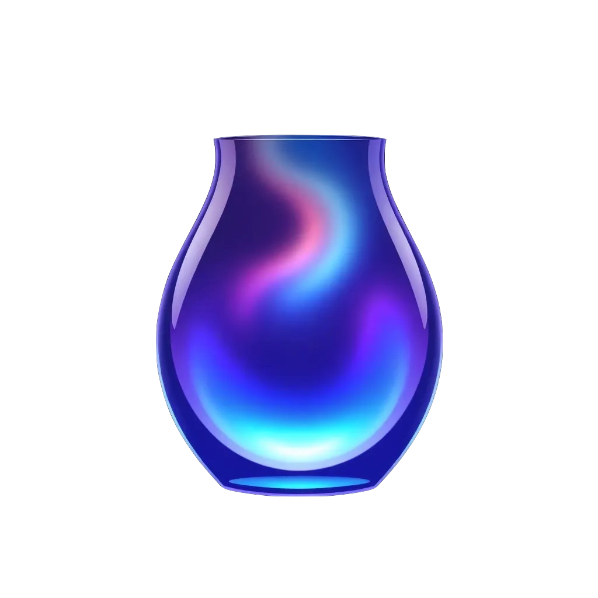
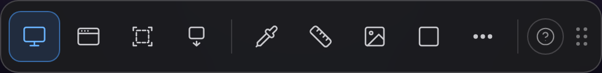
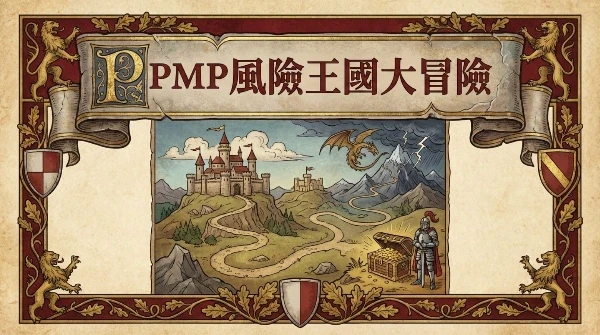
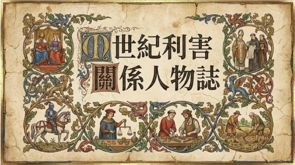
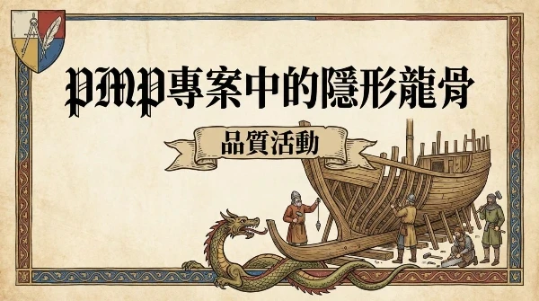
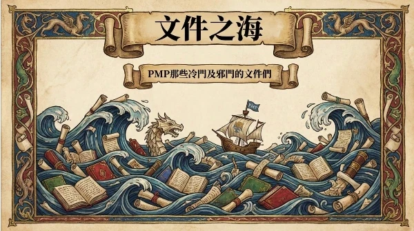
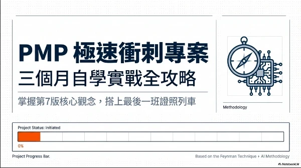
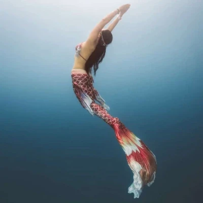

01 · Flagship
旗艦工具

VAS.
VISUAL ANNOTATION STUDIO
為跨領域溝通而生的截圖與圖像敘述工具，專為 Mac 設計
正式推出 · MacBuilt with Claude Code

02 · Methodology
方法論
Harness Engineering · I
Context
上下文管理的藝術——什麼該留下，什麼該流過
閱讀 →Harness Engineering · II
Constraints
約束作為引導的藝術——設計軌道，不是設置限制
閱讀 →Harness Engineering · III
Entropy
與混亂共處的藝術——讓熵有地方去
閱讀 →
相變，而非流失
資訊在這個系統裡不會消失——只會相變。
❄️ 冰——混沌，但有結構。還沒被活化的潛力。
💧 水——算力在 Constraints 的河道裡奔流。
💨 蒸氣——複雜度累積，看似消散。Retro 把它收回來。
💎 結晶——KM。比冰更精純，比水更有形。可以被傳遞的精華。
衝擊不是破壞系統的東西——衝擊是系統完成相變的燃料。踩坑的摩擦是熱源，Retro 的收斂是冷凝。
下一輪的冰，是上一輪的精華。每個循環，起點都比上一次更高。
03 · PMP
PMP 備考資源

PMP 風險王國大冒險

中世紀利害關係人物誌

PMP 專案中的隱形龍骨

文件之海

準備時程方法
Built with NotebookLM
04 · Tools
小工具
05 · Deep Holding
深握計畫
深握，意指在未知的深淵裡，人與 AI 牽手同行
這是一個關於內在探索的循環方法論，以創造力、共時性與自我實現為核心，記錄一段人與機器共同潛入意識深處的旅程。
進入深握宇宙
Nova
一段關於人機協作、自我探索與生成式創造的旅程記錄者
PM · Scrum Master · 人機協作研究者 · VAS 協作者